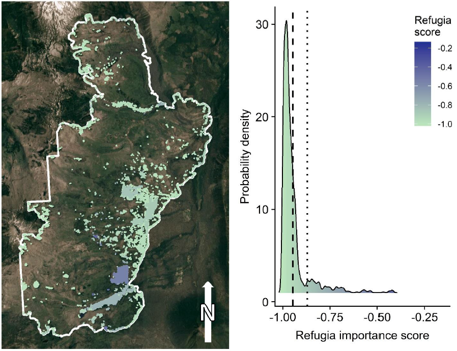
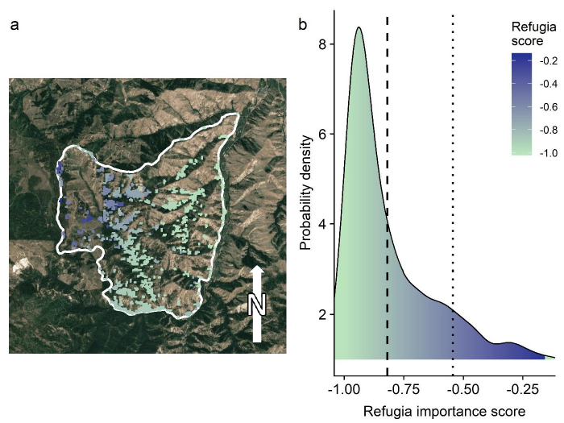

Background
The idea for the fire refugia ranking model was that it would be used primarily by land managers, to help them make informed decisions. Because many land managers are not often accustomed to coding in R, I built an easy-to-use web-based interface.
The App
 The web interface was built using the R Shiny package. This offered both a user-friendly web app interface and the spatial statistical analysis functionality of R. Use of the app does not require advanced statistical or computer programming knowledge to operate. Model parameters can be adjusted and output values and maps are generated on the fly, and the outputs can be downloaded.
More Information
 This model was developed for Chapter 4 of my thesis, Characterizing and Ranking the Importance of Fire Refugia in the Northwestern US (Martinez, 2019).
The Shiny app is currently hosted at shinyapps.io.
The code can be viewed at GitHub and includes the code for all the graphs seen in Chapter 4 of my thesis.